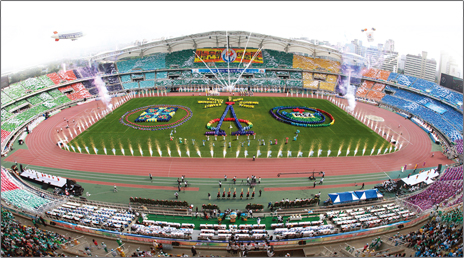
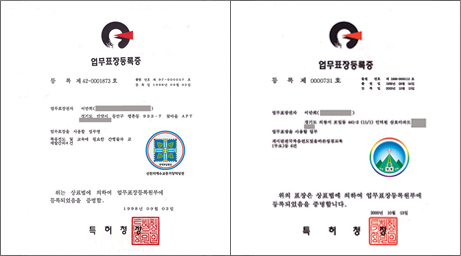

< 신천지 소개 >
- 약속의 성전
- 또 이 일 후에 내가 보니 하늘에 증거 장막의 성전이 열리며 [계 15:5]
- 신천지 연혁
- 우리는 그의 약속대로 의의 거하는 바 새 하늘과 새 땅을 바라보도다 [벧후 3:13]
-
- 11월 10일 시온기독교선교센터 110기 12지파 국내외 연합수료식(총 103,764명 수료)을 성료했다.
- 2019
- 단 10개월 만에 10만 3,764명 수료, 하나님의 능력 나타나
-
시온기독교선교센터 110기 12지파 국내외 연합수료식 (총 103,764명 수료)
신천지 국내 남양주교회 설립
주재림과 추수확인 대집회 (서울, 경기, 인천, 대전, 대구, 부산, 광주, 제주도 국내 전국)
목회자 초청 말씀 집회
한국기독언론협회 기자간담회
강제개종 희생자의 날 행사
‘인터넷 시온선교센터’ 국내 통신교육 시작
[진리의 전당 주제별 요약 해설 11집] 도서 발간
도서기증 봉사 “가자 책으로, 놀자 평화로”
신천지 자원봉사단 각종 봉사활동 및 다수 수상
신천지 성명서 발표 (한기총 신의 실체 이제야 드러났다)
-
- 2018
- 신천지는 세계로,세계는 신천지로! 해외 수료식 성황
-
시온기독교선교센터 107기, 108기 수료식
신천지 동탄교회, 광양교회 설립
신천지 자원봉사단 홈페이지 개설 www.scjvolunteers.com
신천지 자원봉사단 각종 봉사활동 및 다수 수상
[진리의 전당 주제별 요약해설 10집] 도서 발간
[신천지 정통 교리와 부패한 한기총 이단 교리 비교-제2권] 도서 발간
신천지 공개집회
故 구지인 자매 추모 및 강제개종금지법 제정 촉구 걷기집회
강제개종금지법 제정 서명운동
-
- 전 성도가 전 세계 유일 무이한 성경시험인 '새 언약 이행 시험'을 치렀다.
- 2017
- 12지파, 새 언약 이행 시험 실시
-
신천지 공개 세미나
시온기독교선교센터 105기, 106기 수료식
신천지 왕십리교회 설립
신천지 자원봉사단 각종 봉사활동 및 다수 수상
신천지 성명서 발표 <신천지예수교회에 대한 CBS와 정치권의 중상모략을 강력 규탄한다!>
진리의 전당 SCJTV(신천지방송)가 하늘문화방송 HMBC로 새롭게 통합·개편
팟캐스트 방송 ‘하늘팟’ 시작
12지파, 새 언약 이행 시험 실시 (총 4차)
신천지 vs 한기총 교리 비교 : 길거리 블라인드 테스트
‘반국가 반사회 반종교는 한기총과 CBS이다’ 집회 행사
(신천지에 반국가 반사회 반종교라는 누명을 뒤집어씌운 한기총과 CBS의 행위를 규탄하고, 진실을 세상에 밝히 알린 행사)
종단지도자 초청 간담회 행사
‘CBS가 신천지 관련 허위·왜곡 보도한 것에 대해 정정 반론 보도 및 손해배상하라’는 대법원 판결 선고
(CBS : 신천지에 빠진 사람들 방송에 대한 재판 결과)
중앙일보, 동아일보, 한국일보, 서울신문, 세계일보 등 다수의 신문 언론에서 신천지교회 관련 내용 보도
- 시온기독교선교센터 수료식 ‘신천지 올해 수료생만 2만3천여명 배출’
- 신천천지 예수교회 성도, 새언약 이행시험
- 신천지 자원봉사단 봉사 활동 및 수상
-
- 유튜브에 올린 교리비교 영상마다 십만이 넘는 조회수를 기록하였다.
- 2016
- 신천지 vs 한기총 교리 100가지 비교 자료 제작
-
신천지 공개 세미나
시온기독교선교센터 103기 수료식
12지파 전국 지역인 초청행사(Start One Day)
신천지 자원봉사단 각종 봉사활동 및 다수 수상
한기총 거짓증거와 CBS방송의 왜곡·허위 보도 관련 편지 배부
CBS 비방 보도에 대한 언론 진정서 작성
한기총 · CBS 폐쇄를 위한 호소문 작성, 1인 시위 및 서명 운동
한기총 및 CBS 방송국 폐쇄 규탄 궐기 집회
한기총 소속 교회에 보내는 편지 배부
신천지 성명서 발표(CBS의 만행 고발)
신천지 vs 한기총 교리 100가지 비교 책자 · 영상 제작
-
- 한해 수만명 재능기부, 헌혈 5천명. 한국 자원봉사단의 새 지평 열었다.
- 2015
- 신천지 자원봉사단 각종 봉사활동 및 다수 수상
-
신천지 공개 세미나
시온기독교선교센터 101기, 102기 수료식
총회장님, 런던교회 순방 및 설교
12지파 전체 청년 결의대회
신천지 자원봉사단 각종 봉사활동 및 다수 수상
한기총 성명에 대한 신천지 반박 성명서 발표
CBS 허위 왜곡 보도에 대한 신천지 공식 기자회견
언론인 초청 간담회 <종교세계 현실과 언론의 역할>
기독교 목회자에게 보내는 편지 발송
-
- 특별좌담 ‘신천지 신앙을 진단하다’가 신천지 인터넷 방송 SCJ TV에 방영되었다.
- 2014
- 특별좌담 ‘신천지 신앙을 진단하다’ 방영
-
신천지 공개 세미나
시온기독교선교센터 99기, 100기 수료식
총회장님, 특별좌담 ‘신천지 신앙을 진단하다’ , 신천지 인터넷 방송 SCJ TV에 방영
신천지 자원봉사단 각종 봉사활동 및 다수 수상
참고 : “성북구청 사랑의 김장 나눔행사”KBS2 굿모닝 대한민국 생방송 방영 (오전7시10분)
-
- 세계 각국에서 열려진 말씀대성회는 매회 관객과 언론의 찬사가 쏟아졌습니다.
- 2013
- 세계 말씀대성회, 지구촌이 열광하다
-
신천지 말씀대성회, 대한민국, 오세아니아, 동남아, 유럽, 북미, 중남미 개최
인터넷 방송 <HMBC> 개국
[진리의 전당 주제별 요약해설 4집] 도서 발간
-
- 하늘문화예술체전은 약 20만명이 모였으며, 인터넷 방송을 통해 온 세계에 생중계되었다.
- 2012
- 제6회 세계 평화·광복 하늘문화 예술체전 개최
-
인터넷 방송 <진리의 전당> 개국
신천지 말씀대성회, 유럽·미주·아프리카 개최
제6회 세계 평화·광복 하늘문화 예술체전 개최
-
- 신천지의 이름을 걸고 당당하게 공개집회를 하자 관객은 오히려 늘었습니다.
- 2009-2011
- 신천지 말씀대성회, 전국 10개 도시에서 개최
-
[진리의 전당 주제별 요약해설 1집, 2집, 3-1집, 3-2집] 도서 발간
신천지 말씀대성회, 전국 10개 도시에서 개최
[신문 진리의 성읍 아름다운 신천지] 발간
[계시록의 진상 이렇게 이루어졌다] 도서 발간
-
- 
- 성경 말씀을 바탕으로 한 새로운 하늘의 문화를 선보이는 최초의 하늘문화 예술체전이었습니다.
- 2005-2008
- 제5회 하늘문화 예술체전 개최
-
독도 역사왜곡 규탄대회 및 세계 인류에 보내는 평화메시지 발표 (올림픽 평화의 광장)
신천지 인터넷 라디오 방송국 개국
인터넷 동영상 강의 개시
[천지창조] 도서 발간
[성경에 대한 계시와 주석] 도서 발간
제5회 하늘문화 예술체전 개최
-
- 2004년 9월, 논산공설운동장에서 열린 제4회 체전은 약 4만 명의 인원이 참석하였습니다.
- 2001-2004
- 제4회 신천지 전국체전, 하늘문화로 뜨다.
-
시온기독교선교센터 홈페이지 개설
신천지 문화예술단 발족(KBS, MBC 등 출연)
신천지 자원봉사단 발족
대구 하계 유니버시아드 대회 자원봉사
제4회 신천지 전국체전 개최
-
- 
- 신천지 마크와 시온 마크를 많은 전쟁 중 승리하고 획득하였습니다.
- 1998-2000
- 신천지 마크 및 시온마크 특허청 표장 등록
-
신천지 증거장막성전 마크 및 업무 표장 특허청 등록
제2차 구 성지 순례(터키, 그리스, 로마, 밧모 섬)
본부 성전 과천 입성 봉헌예배
시온기독교선교센터 마크 및 업무 표장 특허청 등록
제3회 신천지 전국체전 개최
-
- 보좌 조직으로 총회장을 중심으로 하여 일곱 교육장과 12지파장, 24장로가 임명되었습니다.
- 1995
- 신천지 12지파 보좌 구성
-
신천지 7교육장, 12지파장, 24장로 임명
[성도와 천국(종합편)] 도서 발간
제1차 성지 순례(이스라엘, 이집트)
[감추었던 만나] 발간
제2회 신천지 전국체전 개최
-
- 1993년 10월 체육문화 발전과 전 성도 단결을 위한 ‘제1회 신천지 전국체전’을 열었다.
- 1993
- 제1회 신천지 전국체전 개최
-
신천지 단체 등록
제1회 신천지 전국체전
[천국 비밀 계시록의 실상] 도서 발간
-
- 신약의 예언과 실상을 전하는 시온기독교선교센터가 사당을 시작으로 전국에 세워졌습니다.
- 1990-1991
- 시온기독교선교센터 개원
-
시온기독교선교센터 설립
전국적으로 계시록 집회
시온기독교선교센터 제1~5기 수료식
-
- 경기도에서 시작한 최초의 계시록 집회는 이후 전국 곳곳에서 쉼 없이 열렸습니다.
- 1985-1989
- 신천지 지교회 설립
-
[천국 비밀 계시록의 진상] 도서 발간
전국 첫 장막 순례
여러 지역에 신천지 지교회 설립
제1회 연합 산상 대성회
[성도와 천국1, 2] 및 [계시록의 진상 2] 도서 발간
첫 월간 신문 '생명의 빛' 발간
‘88 서울올림픽’을 찾아온 전 세계인들에게 신천지 홍보
-
- 성전이 없던 시절 산에서 말씀을 증거하는 모습입니다.
- 1984
- 신천지 창립
-
신천지예수교 증거장막성전 창립
최초 건물 성전(동산아파트 지하 성전)
신천지 성헌 공표
도서출판 신천지 정식 등록